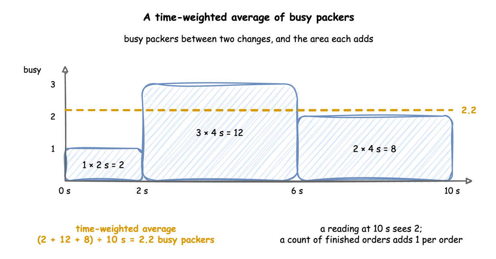

Built-in Statistics
A run can measure itself: how busy each resource was, how long tasks waited, how many entities finished. This page shows how to switch the statistics on, what each level publishes and costs, how each value is computed, and how to add readings of your own.
What It Is
The built-in statistics are measures that desflow keeps while the run goes on and publishes as telemetry, under fixed names such as Shop.stats.tasks.pack_order.wait_mean. They need no code of yours in the builder or YAML, and they reach every sink like any other telemetry. They are off by default, because most runs only generate data. Measuring a Run reads them on the shop.
How to Use It
Choose a Level
A level switches them on. Each level publishes what the levels before it publish, and answers one more question:
| Level | Question | Adds |
|---|---|---|
none |
nothing; the default | |
minimal |
What is happening now? | resources: capacity, in_use, queue_length, utilization, and down for one that breaks down; stores and containers: capacity, level, getters_waiting, putters_waiting; tasks: in_progress |
basic |
How much got done, and how busy was it? | tasks and flows: finished; flows: started and in_system; tasks: balked, reneged, failed, interrupted, preempted and resumed, and flows: failed, once one happens; resources: utilization_avg, queue_length_avg, and downtime and failures for one that breaks down; stores and containers: level_avg |
typical |
How long did tasks take? | tasks: wait_mean, wait_max, service_mean, service_max |
all |
How long did the slowest take? | tasks: wait_p50, wait_p95, wait_p99, service_p50, service_p95, service_p99 |
They are published every interval of simulation time, 10 seconds when it is not given, starting one interval after the start, and once more at the end of the run:
# none (the default), minimal, basic, typical or all, each adding to the one before;
# published every interval of simulation time and once at the end
stats: {level: typical, interval: 1 min}
stats: typical is the short form, with the 10-second interval. The interval takes seconds or a duration.
env.setup_stats("Shop", "typical", interval=60) # before or after the resources
Resources, stores and containers add themselves to env.stats when they are built. Tasks are your own processes, so each reports its steps:
# A low-level task reports its own steps to the statistics
env.stats.task_queued("pack_order", task_id)
with packers.request() as request:
yield request
env.stats.task_started("pack_order", task_id)
yield env.timeout(sampler.sample(env.registry.get_config(path_id)))
env.stats.task_finished("pack_order", task_id)
env.stats.flow_finished("orders") # the order leaves the shop
Read the Names
Every statistic is published as telemetry named <sim_id>.stats.<kind>.<name>.<statistic>, where the kind is resources, stores, containers, tasks or flows. A flow is named by the arrival that started its entities: Shop.stats.flows.orders.finished counts the orders that left the model. Reference, Statistics lists every name with what it measures. These are the statistics the blueprint above publishes at the end of its two minutes:
[TEL] {'sim_ts': 120.0, 'timestamp': '...', 'path_id': 'Shop.stats.resources.packers.capacity', 'value': 2}
[TEL] {'sim_ts': 120.0, 'timestamp': '...', 'path_id': 'Shop.stats.resources.packers.in_use', 'value': 2}
[TEL] {'sim_ts': 120.0, 'timestamp': '...', 'path_id': 'Shop.stats.resources.packers.queue_length', 'value': 6}
[TEL] {'sim_ts': 120.0, 'timestamp': '...', 'path_id': 'Shop.stats.resources.packers.utilization', 'value': 100.0}
[TEL] {'sim_ts': 120.0, 'timestamp': '...', 'path_id': 'Shop.stats.resources.packers.utilization_avg', 'value': 90.79208653095155}
[TEL] {'sim_ts': 120.0, 'timestamp': '...', 'path_id': 'Shop.stats.resources.packers.queue_length_avg', 'value': 1.9083531344309013}
[TEL] {'sim_ts': 120.0, 'timestamp': '...', 'path_id': 'Shop.stats.tasks.pack_order.in_progress', 'value': 8}
[TEL] {'sim_ts': 120.0, 'timestamp': '...', 'path_id': 'Shop.stats.tasks.pack_order.finished', 'value': 70}
[TEL] {'sim_ts': 120.0, 'timestamp': '...', 'path_id': 'Shop.stats.tasks.pack_order.wait_mean', 'value': 2.7959715976263215}
[TEL] {'sim_ts': 120.0, 'timestamp': '...', 'path_id': 'Shop.stats.tasks.pack_order.wait_max', 'value': 11.22214686679115}
[TEL] {'sim_ts': 120.0, 'timestamp': '...', 'path_id': 'Shop.stats.tasks.pack_order.service_mean', 'value': 3.0335617388528364}
[TEL] {'sim_ts': 120.0, 'timestamp': '...', 'path_id': 'Shop.stats.tasks.pack_order.service_max', 'value': 6.357944038555676}
[TEL] {'sim_ts': 120.0, 'timestamp': '...', 'path_id': 'Shop.stats.flows.orders.finished', 'value': 70}
[TEL] {'sim_ts': 120.0, 'timestamp': '...', 'path_id': 'Shop.stats.flows.orders.started', 'value': 78}
[TEL] {'sim_ts': 120.0, 'timestamp': '...', 'path_id': 'Shop.stats.flows.orders.in_system', 'value': 8}
In Python the same values are in env.stats.readings(), by name, during or after the run:
# Every statistic the level publishes, by its published name
readings = env.stats.readings()
print(f"mean wait {readings['Shop.stats.tasks.pack_order.wait_mean']:.2f} s")
app.env.stats.readings() gives the same from a builder or YAML run.
Which Entities a Count Covers
Every entity that arrives belongs to one population when the statistics are read, and each population has its counts, from basic unless noted. A mean wait or service time covers only the instances that reached that step, so report the counts beside it:
| Population | Which entities | Counts |
|---|---|---|
| completed | left the model after their last task | flows.<arrival>.finished; tasks.<task>.finished per task |
| still present | started and not yet ended when the statistics are read | flows.<arrival>.in_system; tasks.<task>.in_progress, the instances queued or started, from minimal |
| rejected | refused to join a queue, as their balk held |
tasks.<task>.balked |
| abandoned | left a queue when their patience ran out, or ended by an interrupt under on_interrupt: abandon |
tasks.<task>.reneged; an abandoned flow leaves in_system without adding to finished or failed, and tasks.<task>.interrupted counts the interrupts |
| failed | ended in a failure that no on_fail handled |
flows.<arrival>.failed; tasks.<task>.failed counts failed instances |
| warm-up-crossing | started before the warm-up ended and ended after it | in finished, and in the wait and service times with their whole wait, but not in started |
Without a warm-up, started is finished plus in_system plus the entities that balked, reneged, failed or were abandoned. A warm-up starts started, finished, failed and the outcome counts again from zero and leaves in_system and in_progress as they are, so after it finished also counts the warm-up-crossing entities and can be larger than started. End Conditions counts each population of a run.
Add Readings of Your Own
Anything else is a custom reading: a function called at an interval of simulation time, which publishes with context.publish(name, value) as <sim_id>.<name>. It can read resources, stores, containers or any registry value.
telemetry:
# Readings of your own: called as packers_report(context) every 30 seconds
- interval: 30
function: !python shop_logic.packers_report
The function is in shop_logic.py, beside the blueprint:
def packers_report(context):
"""A custom reading: orders waiting per packer, and the live arrival rate."""
packers = context.get_resource("packers")
waiting = len(packers.queue.items)
context.publish("waiting_per_packer", waiting / max(packers.capacity, 1))
rate = context.env.registry.get(f"{context.sim_id}.arrival.orders.rate").value
context.publish("arrival_rate", rate) # as Shop.arrival_rate
@app.telemetry_loop(interval=30.0)
def packers_report(context: SimulationContext):
"""Readings of your own: orders waiting per packer, and the live arrival rate."""
packers = context.get_resource("packers")
waiting = len(packers.queue.items)
context.publish("waiting_per_packer", waiting / max(packers.capacity, 1))
rate = context.env.registry.get("Shop.arrival.orders.rate").value
context.publish("arrival_rate", rate) # as Shop.arrival_rate
A process that loops, publishes with env.publish_telemetry(name, value) and waits with env.timeout(interval) does the same.
Example: Measuring a Run
The measuring example publishes every statistic of the packers and the pack task every 5 minutes, leaves out a 3-minute warm-up, and sends a ground-truth record when packing slows down, to a sink of its own. It needs no Docker service and ends on its own.
Quick Start
desflow examples get downloads the example at the release you install, into a folder of its own. Pick uv or pip:
# Every level: readings, counts and time averages, mean and maximum wait and service,
# and their 50th, 95th and 99th percentiles, such as Shop.stats.tasks.pack.wait_p95.
stats: {level: all, interval: 5 min}
scenario:
# Packing slows from 4 to 4.8 seconds on average. The record is the ground truth.
- at: 12 min
path: Shop.service.packing.scale
value: 1.2
record: {fault: slow_packing, cause: new packing material}
The whole file is examples/yaml/measuring.yaml.
Quick Start
desflow examples get downloads the example at the release you install, into a folder of its own. Pick uv or pip:
def slow_packing(context):
"""Packing slows from 4 to 4.8 seconds on average at 12 minutes, with its label."""
yield context.env.timeout(720)
path = "Shop.service.packing.scale"
registry = context.env.registry
old = registry.get(path).value
registry.update(path, 1.2)
context.env.publish_label(
{"fault": "slow_packing", "cause": "new packing material"},
path=path,
old=old,
new=registry.get(path).value,
)
app.add_process(slow_packing)
The whole file is examples/builder/measuring_example.py.
Quick Start
desflow examples get downloads the example at the release you install, into a folder of its own. Pick uv or pip:
# Every level, published every 5 minutes, such as Shop.stats.tasks.pack.wait_p95
env.setup_stats("Shop", "all", interval=300)
# The second sink receives the ground-truth records, and nothing else
env.setup_egress(
[ConsoleEgress(), ConsoleEgress()], labels=[False, True], warmup=WARMUP
)
The whole file is examples/low-level/measuring_example.py.
How It Works
The environment keeps one Statistics object, env.stats, which collects nothing until a level above none is set. Its timer publishes every value at each interval, and the teardown publishes them once more.
Readings now. capacity, in_use, queue_length and level are read from the object at the moment of publishing. in_use counts the units held by tasks, so after a capacity drop it can be above capacity, and utilization, in_use ÷ capacity × 100, above 100.
Breakdowns. A resource with a breakdown reads down now: 1 while it is down, 0 otherwise. downtime adds the length of each down period, and of one still going on, and failures adds one at each failure; Breakdowns checks both against the events.
Averages over time. utilization_avg, queue_length_avg and level_avg weigh each value by how long it lasted. Each resource, store and container reports every change, and the statistics add the area under the value since the last change, so the average is exact at any moment rather than sampled:

Counts. finished adds one when a task instance finishes, and a flow's finished adds one when an entity's last task has no next task. A flow's started adds one when an entity's first task instance begins, before its balk check and its queue, whether or not it is then served, and in_system is the number of its entities in the model now, started and not yet finished, failed or gone; so started is finished plus in_system plus the entities that balked, reneged, failed or were abandoned. A task's in_progress is the number of its instances queued or started and not yet ended, now. A low-level process reports entities with env.stats.flow_started(arrival) and, for one that leaves without finishing or failing, env.stats.flow_ended(arrival). A task's balked adds one when an instance refuses to join its queue, reneged when one leaves the queue after its patience, and failed when one fails (Failures); a flow's failed adds one when an entity's flow ends in a failure no on_fail handles. interrupted and preempted add one for each interrupt or preemption an instance receives, and resumed when it is served again. Each is published once it is above 0. A balked, reneged or failed instance adds no wait or service time. An interrupted instance that resumes adds one wait, the sum of all its waits, and one service time, the time it was served. A low-level process counts them with env.stats.task_balked(task, instance), env.stats.task_reneged(task, instance), env.stats.task_failed(task, instance), env.stats.flow_failed(arrival), env.stats.task_interrupted(task, instance, preempted=...) and env.stats.task_resumed(task, instance).
Wait and service. The wait of a task instance runs from its queued step to its started step, and its service from started to finished; a task that never queues, such as a timed step, waits 0. typical keeps a count, a total and a maximum of each, so their cost does not grow with the run. all keeps every observation and computes the percentiles exactly with NumPy's percentile at each publication, so its memory grows with the number of tasks.
Warm-up. A run's warmup resets every statistic once, at that time: the averages start again from zero area, and the counts and observations from zero. An instance that was queued before the reset and starts after it counts with its whole wait. Time and Pacing describes the warm-up.
Stability and Limits
- Cost.
minimalreads a few values at each publication.basicadds a little work at every change of a resource, store or container.typicaladds a little at every task step.allkeeps every wait and service time in memory for the whole run; use it for runs of thousands of tasks, not for a generator that runs for days. - One way to get resource readings. Before 0.21.0, a
telemetryentry could publish<resource>.<reading>by name. That shortcut is gone:stats: minimalpublishes the same readings, underShop.stats.resources.<name>.<reading>.telemetrynow takes only a function, for readings of your own. - One run is one sample. The statistics describe one run with one seed. Values from the same run are not independent of each other, and another seed gives other values; Trusting Results shows what that means for a result, and Replications run a model with many seeds.
- A task appears once it has run. A task's statistics are published from the first time it starts, at
typicalandall, or finishes, atbasic.